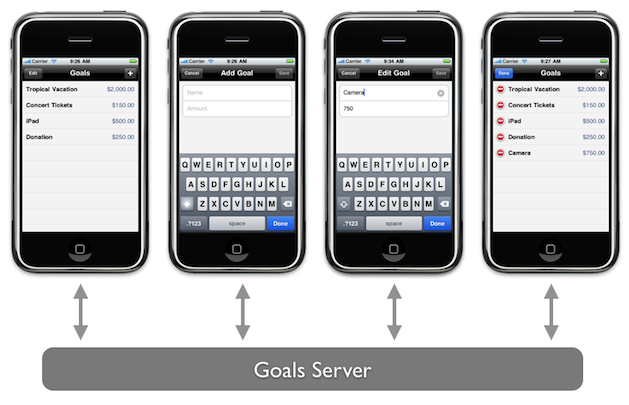

code/3-scaffold directoryGoal to include CRUD methods that delegate to the libraryGoalsViewController to delete a remote goalGoalAddViewController to create or update a remote goal1. Create a request from a URL:
NSURL *url = [NSURL URLWithString:@"http://localhost:3000/goals.json"]; NSURLRequest *request = [NSURLRequest requestWithURL:url]; [request setHTTPMethod:@"GET"];
2. Send the request synchronously:
NSURLResponse *response = nil;
NSError *error = nil;
NSData *responseData =
[NSURLConnection sendSynchronousRequest:request returningResponse:&response error:&error];3. Handle the returned data:
NSString *responseString =
[[NSString alloc] initWithData:responseData encoding:NSUTF8StringEncoding]; To support CRUD, we need four standard verbs:
#import <Foundation/Foundation.h>
@interface Resource : NSObject {
}
+ (NSString *)get:(NSString *)url;
+ (NSString *)post:(NSString *)body to:(NSString *)url;
+ (NSString *)put:(NSString *)body to:(NSString *)url;
+ (NSString *)delete:(NSString *)url;
@end
Implementation can be generalized:
+ (NSString *)get:(NSString *)url {
return [self sendBy:@"GET" to:url withBody:nil];
}
+ (NSString *)post:(NSString *)body to:(NSString *)url {
return [self sendBy:@"POST" to:url withBody:body];
}
+ (NSString *)put:(NSString *)body to:(NSString *)url {
return [self sendBy:@"PUT" to:url withBody:body];
}
+ (NSString *)delete:(NSString *)url {
return [self sendBy:@"DELETE" to:url withBody:nil];
}
+ (NSString *)sendBy:(NSString *)method to:(NSString *)url withBody:(NSString *)body {
NSMutableURLRequest *request =
[NSMutableURLRequest requestWithURL:[NSURL URLWithString:url]];
[request setHTTPMethod:method];
if (body) {
[request setHTTPBody:[body dataUsingEncoding:NSUTF8StringEncoding]];
[request setValue:@"application/json" forHTTPHeaderField:@"Content-Type"];
}
return [self sendRequest:request];
}
+ (NSString *)sendRequest:(NSMutableURLRequest *)request {
NSHTTPURLResponse *response;
NSError *error;
NSData *responseData =
[NSURLConnection sendSynchronousRequest:request
returningResponse:&response
error:&error];
NSString *responseString =
[[NSString alloc] initWithData:responseData
encoding:NSUTF8StringEncoding];
[responseString autorelease];
return responseString;
}
Define new CRUD methods:
@interface Goal : NSObject {
NSString *name;
NSString *amount;
NSString *goalId;
NSDate *createdAt;
NSDate *updatedAt;
}
@property (nonatomic, copy) NSString *name;
@property (nonatomic, copy) NSString *amount;
@property (nonatomic, copy) NSString *goalId;
@property (nonatomic, retain) NSDate *createdAt;
@property (nonatomic, retain) NSDate *updatedAt;
- (id)initWithDictionary:(NSDictionary *)dictionary;
+ (NSArray *)findAllRemote;
- (void)createRemote;
- (void)updateRemote;
- (void)saveRemote;
- (void)destroyRemote;
@end
Implement CRUD methods to delegate to our custom Resource class:
- (void)createRemote {
NSString *url =
[NSString stringWithFormat:@"%@/goals.json", siteURL];
[Resource post:[self params] to:url];
}
- (void)updateRemote {
NSString *url =
[NSString stringWithFormat:@"%@/goals/%@.json", siteURL, self.goalId];
[Resource put:[self params] to:url];
}
- (void)saveRemote {
if (self.goalId == nil) {
[self createRemote];
} else {
[self updateRemote];
}
}
- (void)destroyRemote {
NSString *url =
[NSString stringWithFormat:@"%@/goals/%@.json", siteURL, self.goalId];
[Resource delete:url];
}
- (void)tableView:(UITableView *)tableView
commitEditingStyle:(UITableViewCellEditingStyle)editingStyle
forRowAtIndexPath:(NSIndexPath *)indexPath {
[tableView beginUpdates];
if (editingStyle == UITableViewCellEditingStyleDelete) {
Goal *goal = [goals objectAtIndex:indexPath.row];
// TODO: destroy remote goal
[goals removeObjectAtIndex:indexPath.row];
[tableView deleteRowsAtIndexPaths:[NSArray arrayWithObject:indexPath]
withRowAnimation:UITableViewRowAnimationFade];
}
[tableView endUpdates];
}
-(IBAction)save {
goal.name = nameField.text;
goal.amount = amountField.text;
// TODO: create or update remote goal
[self.delegate didChangeGoal:goal];
[self.navigationController popViewControllerAnimated:YES];
}
- (void)tableView:(UITableView *)tableView
commitEditingStyle:(UITableViewCellEditingStyle)editingStyle
forRowAtIndexPath:(NSIndexPath *)indexPath {
[tableView beginUpdates];
if (editingStyle == UITableViewCellEditingStyleDelete) {
Goal *goal = [goals objectAtIndex:indexPath.row];
[goal destroyRemote];
[goals removeObjectAtIndex:indexPath.row];
[tableView deleteRowsAtIndexPaths:[NSArray arrayWithObject:indexPath]
withRowAnimation:UITableViewRowAnimationFade];
}
[tableView endUpdates];
}
-(IBAction)save {
goal.name = nameField.text;
goal.amount = amountField.text;
[goal saveRemote];
[self.delegate didChangeGoal:goal];
[self.navigationController popViewControllerAnimated:YES];
}
⇧ ⌘ R)code/4-crud